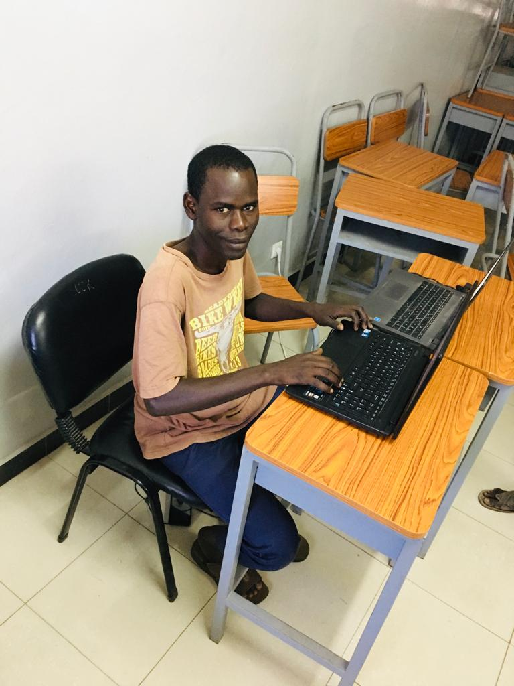
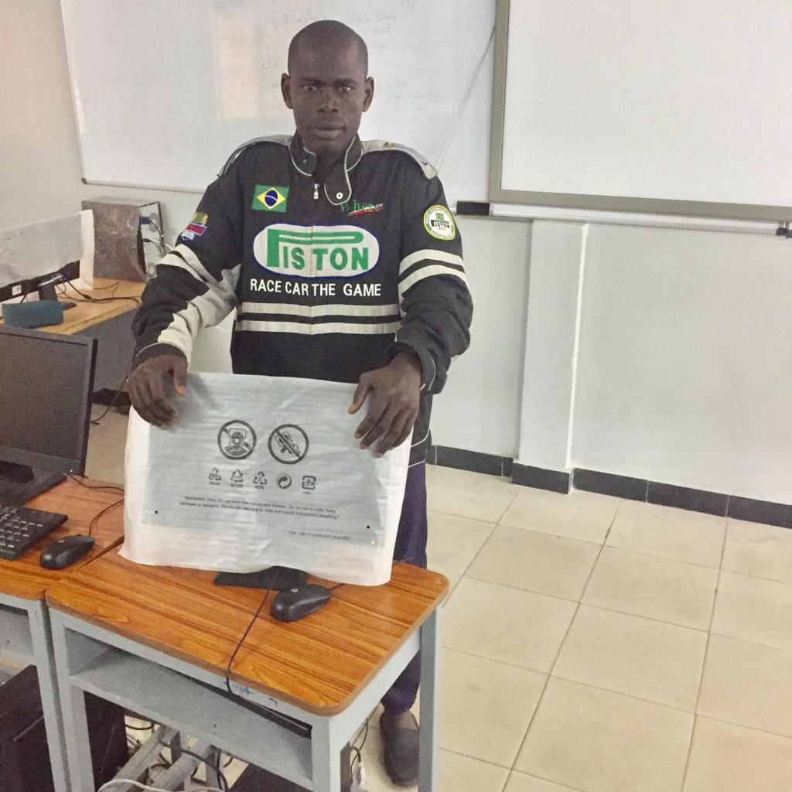
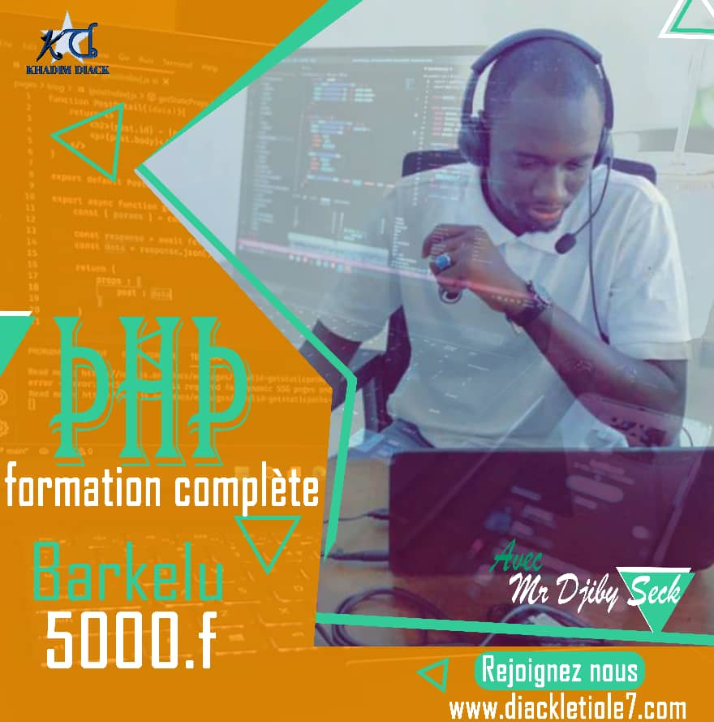
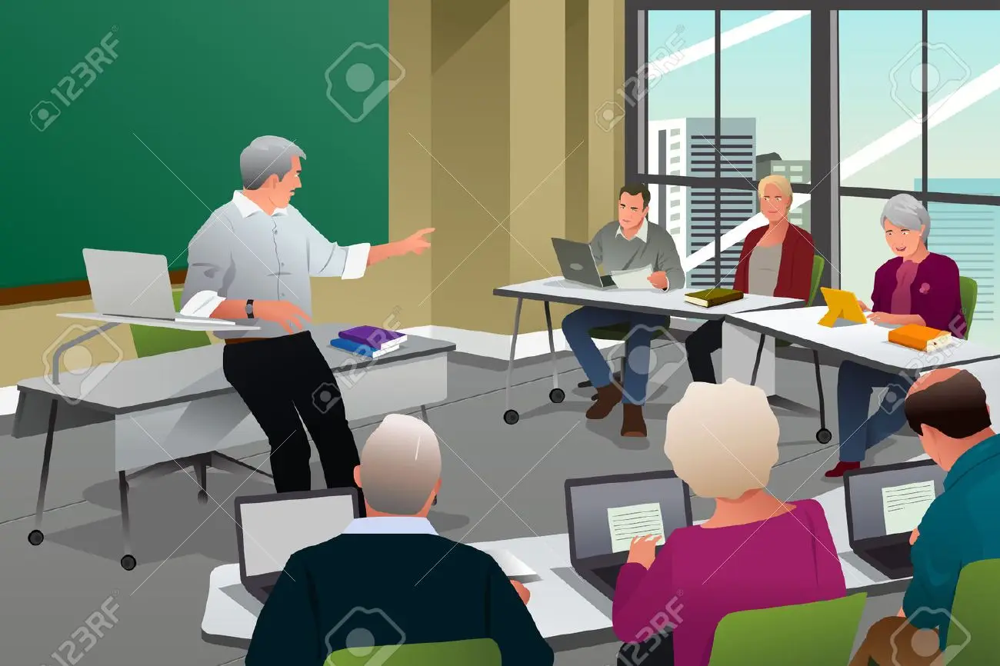

|  | Prenom:Ibrahima Nom: Dia Origine: Linguere Adress: dakar, parcelle Email:diaibrahima@gmail.com |
|  | Honnêteté Respect Respect Responsabilité Détermination Confiance en soi Créativité |
Pour realiser ce projet nous avons contacte plusieure comme:
|  | M.Djiby Seck Professeure informatique en UCAB celui qui ma donner beaucoup d'experience et connaissence pour realiser ce projet |
| Mrs.Kane et son assistant Mrs.Dia Sont les deux Professeure en UCABqui nous a etudier tous les base HTML CSS(Developpement Web) |
|  |
Autre personne comme:
les etudiant de premiere promossnon L3 en ucab qui nous accompagnet comme des ancdreure professionnelle et aussi nos efforts personnelle comme: nous avons vsiter beaucoup de site ainsi Xarala academie opennclassroom googlefont |
En realisant ce projet nous avons gagner beaucoup d'experience comme: